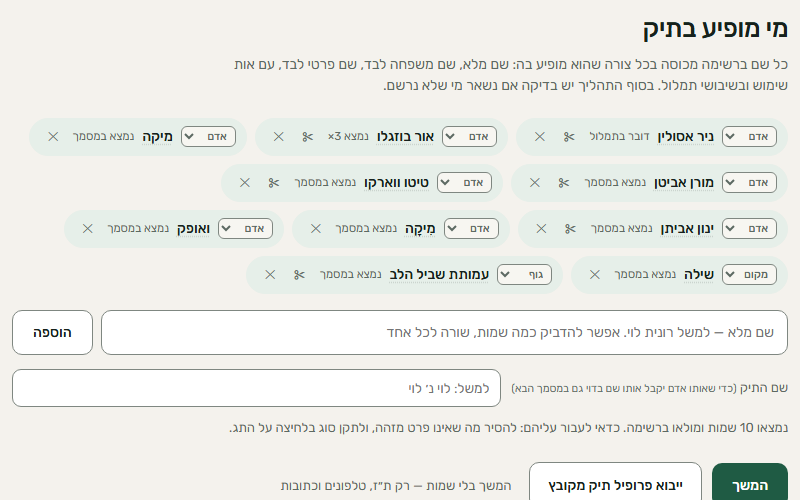
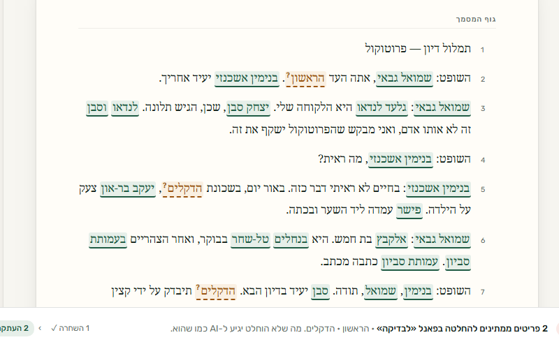
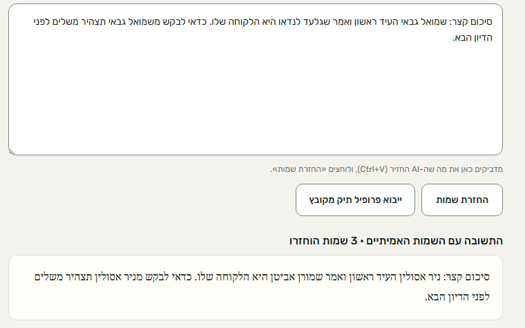

להיעזר ב־AI בלי לחשוף את הלקוח.
אינקוגניטו מחליף שמות ופרטים מזהים בשמות ובפרטים בדויים, ישירות בדפדפן, ומחזיר את השמות האמיתיים לתשובה של ה־AI.
- חינם
- כניסה עם Google או קישור במייל
- המסמך המקורי לא יוצא מהמחשב
- בדפדפןהזיהוי וההחלפה רצים במחשב שלך
- Word ו־PDFנקראים ישירות, בלי המרה
- בעבריתכולל אותיות שימוש ושגיאות כתיב
- כל כלי AIכל כלי שאפשר להדביק בו טקסט
כלי AI חוסכים שעות. שמות הלקוחות לא צריכים להגיע אליהם.
סיכום פרוטוקול, טיוטת תצהיר, שאלה על פסק דין: כלי AI עושים את זה מהר. אבל טקסט שמודבק לצ׳אט יוצא מהמשרד, עם השמות, המספרים והכתובות שבו.
השחרה ידנית לוקחת זמן, ושם אחד שנשכח מספיק. אינקוגניטו עושה את ההחלפה, וההחלטה נשארת אצלך.
שלושה צעדים, בלי לצאת מהדפדפן

מעלים מסמך
קובץ Word או PDF. הכלי מוצא את האנשים, המקומות והמספרים, ונשאר רק לעבור על הרשימה.

מעתיקים ל־AI
כל שם מוחלף בשם בדוי שנשמע טבעי, ואותו אדם תמיד מקבל אותו שם. את הגרסה הזאת מדביקים בכלי ה־AI.

מדביקים את התשובה
מדביקים את התשובה, והשמות האמיתיים חוזרים למקומם, במחשב שלך.
בנוי למסמכים משפטיים בעברית
אותיות שימוש
״לרונית״, ״ולוי״, ״וכהן״: השם נמצא ומוחלף גם כשהוא צמוד למילה.
שגיאות כתיב
שם שנכתב פעם אחת נכון ופעם בשגיאה מזוהה כאותו אדם.
כל פינה בקובץ
כותרות עמוד, הערות שוליים, הערות סקירה, טקסט חלופי של תמונות ומאפייני הקובץ.
מספרים ופרטי קשר
תעודות זהות, טלפונים, חשבונות בנק, מספרי רכב וכתובות מייל.
עקבי לאורך התיק
אותו אדם מקבל אותו שם בדוי גם במסמך הבא של אותו תיק.
ההחלטה אצלך
כל הצעה אפשר לקבל, לשנות או לדחות לפני שמשהו מועתק.
מה נשאר אצלך, ומה יוצא
המסמך המקורי לא נשלח לשום מקום. זו הרשימה המלאה של מה שכן יוצא מהמחשב, ולאן.
המחשב שלך
כאן קורה כל העיבוד
- המסמך המקורי
- השמות האמיתיים
- רשימות התיקים והשמות הבדויים שנבחרו
- מנוע הזיהוי ומודל השפה העברי (יורד פעם אחת מהאתר)
כלי ה־AI שבחרת
- הטקסט עם השמות הבדויים
- לא מקבל: השמות האמיתיים
אינקוגניטו
- שם וכתובת מייל, לכניסה
- יומן שימוש בלי טקסט: לחיצות, זמנים וספירות. רק בהסכמה, ואפשר לבטל בכל עת
- לא מקבל: המסמך, השמות ושמות הקבצים
אפשר לבדוק בעצמך: פותחים את כלי המפתחים בדפדפן (F12), עוברים ללשונית Network ומעבדים מסמך. אף בקשה לא נושאת את הטקסט שלו. והקוד כולו פתוח לקריאה ב־GitHub.
את המסמך:לא מעלים.לא שומרים.לא מאמנים עליו.
כמה זה מדויק
43 מסמכי בדיקה מומצאים, שנבנו כדי להכשיל את הכלי: אותיות שימוש, ניקוד, שגיאות תמלול, שמות בהערות שוליים. כל שינוי בקוד נבדק מולם לפני שהוא עולה לאוויר.
גם 266 מתוך 268 זה לא הכול. לכן מסומן מה כדאי לבדוק לפני ההעתקה, והבדיקה האחרונה תמיד שלך.
נמדד עם מודל השפה, ספטמבר 2026. מסמכי הבדיקה והתוצאות פתוחים ב־GitHub.
שאלות נפוצות
המסמך באמת לא יוצא מהמחשב?
נכון, הוא לא יוצא. הקובץ נקרא ונסרק, והשמות מוחלפים, בתוך הדפדפן. מודל השפה העברי יורד פעם אחת מהאתר ורץ אצלך. לשרת מגיעים רק פרטי הכניסה, ויומן שימוש בלי טקסט אם הסכמת לשלוח אותו. אפשר לבטל בכל עת.
מה קורה אם הכלי מפספס שם?
זה יכול לקרות. לכן לפני ההעתקה מוצגת רשימה של כל מה שנמצא, ומסומן מה כדאי לבדוק. שם שפוספס מוסיפים בלחיצה, והוא מוחלף בכל המסמך.
עם אילו כלי AI זה עובד?
עם כל כלי שאפשר להדביק בו טקסט: ChatGPT, Claude, Gemini, Copilot ואחרים. אינקוגניטו לא מתחבר לאף אחד מהם.
למה זה חינם?
בתקופת ההשקה הכלי חינם. אם תהיה בעתיד תוכנית בתשלום, נודיע מראש.
מה אתם יודעים עליי?
שם וכתובת מייל מחשבון Google או מהקישור, מתי נכנסת, ויומן שימוש בלי טקסט (לחיצות, זמנים, ספירות) אם הסכמת לשלוח אותו. הפירוט המלא במדיניות הפרטיות.
להשתמש ב־AI בלי לחשוף לקוחות
חינם. כניסה עם Google או קישור במייל.